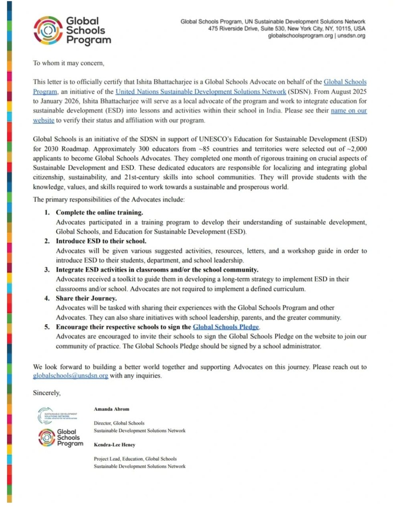

The situation
I was selected for the Global Schools Advocates Program, an initiative of the United Nations Sustainable Development Solutions Network (SDSN) under its Global Schools Program, as part of Cohort 7. The programme equips educators around the world to promote Education for Sustainable Development (ESD) in their classrooms and communities, with tools, resources and a global network to embed the Sustainable Development Goals (SDGs) into everyday learning.
The programme's letter says that about 300 educators from around 85 countries and territories were selected out of roughly 2,000 applicants. They completed one month of training and serve as local advocates from August 2025 to January 2026.
What I hoped to do
I believe schools are not just places for academic learning but powerful platforms to shape socially responsible, globally minded citizens. Being part of the cohort gave me the chance to:
- deepen my understanding of ESD and how to embed it meaningfully into classroom practice;
- explore ways to align teaching and learning with the SDGs, making global issues relatable and actionable for students;
- collaborate with and learn from a network of educators around the world who are driving change in their schools and communities.
What an advocate does
The letter lists five responsibilities: complete the online training; introduce ESD to students, colleagues and school leadership; integrate ESD activities into classrooms or the school community; share the journey with the programme and other advocates; and encourage the school to sign the Global Schools Pledge.

What I am grateful for
Thank you to Aprajita Ralli, Malcolm Nicolson and Sonal Shrivastava at Sreenidhi International School, and to Amanda Abrom and the Global Schools Program team.